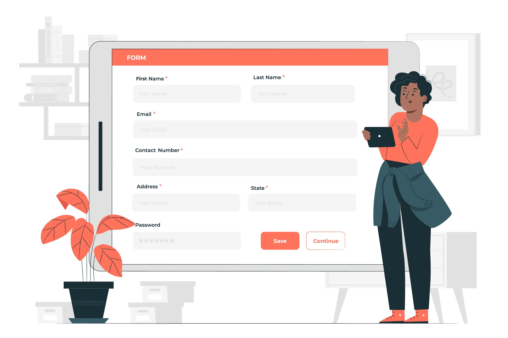

Demander une facilitation
Le producteur non adhérent devient adhérent maintenant . Déposez votre demande de facilitation afin d’adhérer aux plusieurs services que dépose l’association .

Le producteur non adhérent devient adhérent maintenant . Déposez votre demande de facilitation afin d’adhérer aux plusieurs services que dépose l’association .
Pour être adhérent avec l’association RIAM il faut que vous créez un compte de ferme .

La demande de facilitation que vous déposez récemment vous pouvez suivre les étapes et le processus de cette demande .En cliquant sur le lien en dessous.
Si vous n'avez pas encore créé votre compte ferme , créez le maintenant , et vous pouvez pourrez consulter vos informations ,et les modifier grâce à ce lien .

Le producteur peut-on faire une demande de labellisation déclenchant un processus de visite
La demande de labellisation que vous déposez récemment vous pouvez suivre les étapes et le processus de cette demande .En cliquant sur le lien en dessous
Il faut être un coordinateur pour y accéder paramètres des enquêtes.

Hay Ryad secteur 19 bloc N°17 angle rue Copernicia et rue Marina 10100, Rabat